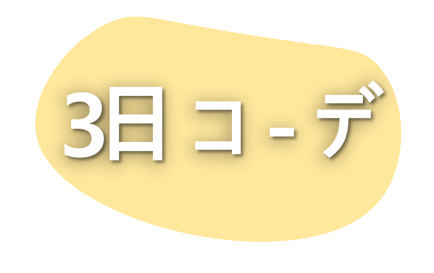
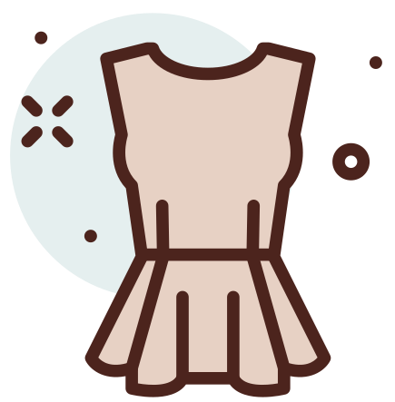
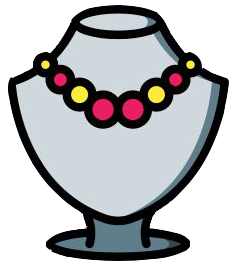
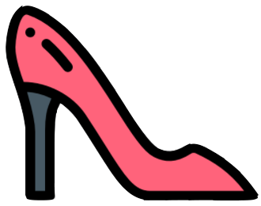
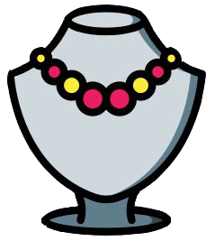
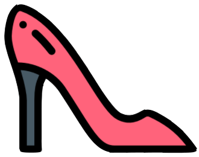

SAT: Classic A

퍼프 소매와 프릴 밑단으로 러블리함을 더해줍니다.
산뜻한 민트 컬러 팬츠로 여름의 싱그러움을 담았습니다.
민트 컬러와 잘 어울리는 연두색 힐을 매치해주었고
앞코가 뾰족해 다리가 더 길어 보이게 만들어 줍니다.
연두색이 이 코디의 핵심 컬러이기 때문에
가방은 상의와 같은 화이트로 준비했습니다.
토트 형식으로 가방을 들어 세련된 코디를 만들 수 있고
크로스 형식으로 매치하면 캐주얼한 룩을 연출할 수 있습니다.
상의가 스퀘어 넥으로 되어있어 얇은 비즈 목걸이를 착용해
귀여움을 더해주었습니다.

1. 엘라스틱 포플린 탑
￦49,000
 2. FULL LENGTH 매니시 팬츠
2. FULL LENGTH 매니시 팬츠
￦59,000
 3. 비즈 이니셜 네크리스
￦19,000
4. 스티치 디테일 미니 크로스백
￦39,000
 5. 레더 슬링백 키튼힐 슈즈
￦79,000
￦49,000
￦59,000
 3. 비즈 이니셜 네크리스
￦19,000
4. 스티치 디테일 미니 크로스백
￦39,000
 5. 레더 슬링백 키튼힐 슈즈
￦79,000